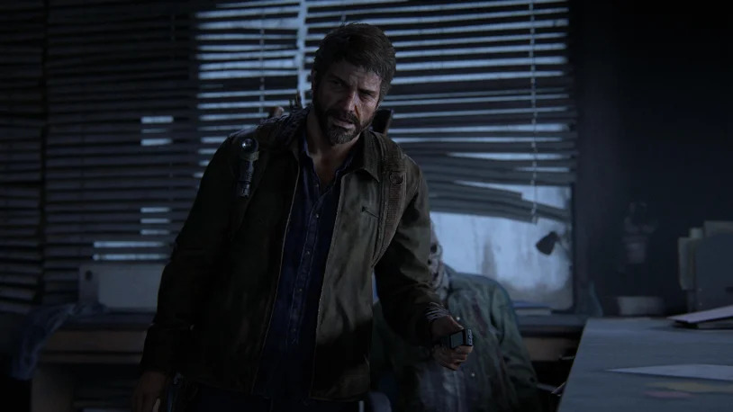

Après de longues heures passées à réparer votre vieille radio dans ce nouveau monde apocalyptique, le grésillement cède la place à une voix brisée. Le message vous informe de l'existence d'une ville de survivants, un havre de sécurité appelé "New Haven." Votre cœur s'emballe d'espoir à l'idée d'un refuge potentiel, mais vous savez que la route vers cette destination est semée d'embûches. Votre aventure commence ici, alors que vous vous apprêtez à traverser un monde déchu et hostile pour atteindre ce bastion lointain.
